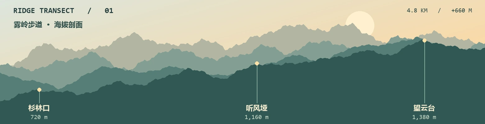

06:40 · 晨雾初散
林间能见度约五十米，体感温度 11 °C，完成气压表校准后沿石阶上行。
07:25 · 雾线交汇
东坡的雾沿着垭口倾泻下沉，西侧山脊已经迎着朝阳见光，适合延时取景。
08:10 · 云海尽览
累计爬升 +660 m，云顶低于观测点，整片穿过的雾带在脚下铺展。
多选项卡
输入 /tabs，把不同平台的安装步骤或分段观测记录放进一组选项卡，支持 + 新建、键盘切换与源码编辑。
换个编辑器 每个标签对应普通标题，所有面板内容按原顺序完整展示。
开源桌面 Markdown 编辑器
图片与 Excalidraw 手绘图默认内嵌进 Markdown，无需图床。用多选项卡整理步骤、用折叠块收起细节、给代码块加上居中标题与重点行高亮——全部基于可回退的标准语法，发给其他编辑器依然完整可读。
Windows x64 macOS Apple 芯片 Linux x64
把图片、手绘图与现代排版交互收进同一份 Markdown，同时守住纯文本的可读底线。
06:40 · 晨雾初散
林间能见度约五十米，体感温度 11 °C，完成气压表校准后沿石阶上行。
07:25 · 雾线交汇
东坡的雾沿着垭口倾泻下沉，西侧山脊已经迎着朝阳见光，适合延时取景。
08:10 · 云海尽览
累计爬升 +660 m，云顶低于观测点，整片穿过的雾带在脚下铺展。
输入 /tabs，把不同平台的安装步骤或分段观测记录放进一组选项卡，支持 + 新建、键盘切换与源码编辑。
换个编辑器 每个标签对应普通标题，所有面板内容按原顺序完整展示。

默认将粘贴截图、本地图片和网页图片直接嵌入 Markdown，分享只需单个文件；支持拖拽调宽（可吸附 100%）、批量内嵌与源码折叠芯片。
兼容其他编辑器 支持内嵌图片的编辑器可直接离线查看；遇到过滤内嵌图片的平台时，右键「转换为本地图片」即可一键导出。

输入 /excalidraw 直接在文档内绘制流程图、草图与架构图，默认内嵌单文件（也可选独立 .excalidraw 文件），支持弹窗或标签页编辑与拖拽调宽。
兼容与导出 以标准图片方式保存，源码模式折叠为紧凑芯片；导出 HTML / PDF 时自动渲染为高清图。
东西两侧坡面的气流在此交汇。每分钟拍一张照片，就能看出雾线抬升与回落的方向；平时折起来，不打断主线阅读。
输入 /fold 快速收起长日志、答案或背景说明，也支持设置为默认展开，让长文主线更清爽。
换个编辑器 标记作为 HTML 注释自动隐藏，标题和完整内容直接可读；导出 HTML 转为原生可交互折叠块。
1elevations = [720, 1160, 1380]2start, summit = elevations[0], elevations[-1]3gain = summit - start4temp_drop = round(gain / 100 * 0.6, 1)顶栏居中显示文件名、高亮关键代码行、拖拽底部边缘调整预览高度或一键展开长代码；点击复制始终得到完整源码。
换个编辑器 仍是标准围栏代码块，所有编辑器都能正常高亮、阅读和复制每一行代码。
不发明破坏纯文本可读性的私有格式。选项卡、折叠块、代码标注与媒体内嵌全部建立在标准 Markdown 结构之上。
跨工具协作 同一份文档提交到 GitHub，或在 VS Code、Typora、Obsidian 中打开，结构与内容依然清晰。
Windows 与 Linux 提供 x64 安装包，macOS 提供 Apple 芯片版，全部开源免费。
最新发布、Windows 便携版（ZIP / 7z）、其他 Linux 软件包（deb / rpm / snap）与 SHA256 校验文件见 GitHub Releases。